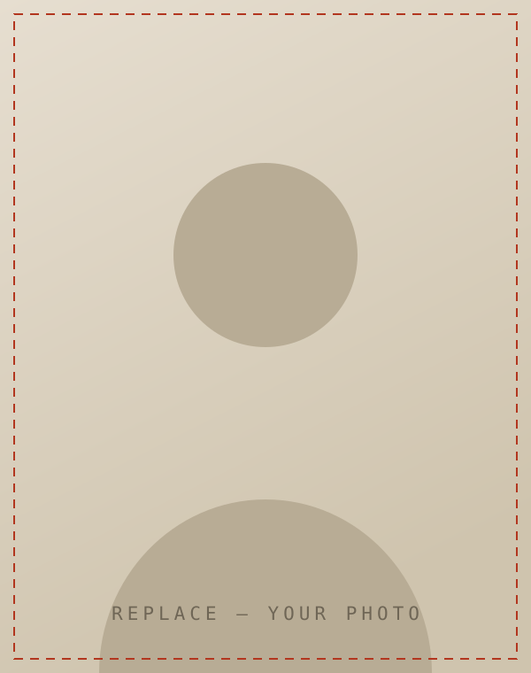

Career e-Portfolio · A.Y. 0000–0000
First Lastname
Aspiring — Your Target Role
A one-or-two sentence positioning line goes here — the course you are finishing, the field you are entering, and the kind of work you want to be trusted with. Keep it plain and confident.

Who I am
Background, values, and what drew you to this field.
Open with a sentence that says who you are in your own voice — not a job title, but the thing you keep coming back to. Two or three more sentences on where you started, what shaped how you work, and why this field held your attention long enough to build a portfolio around it.
Second paragraph: the through-line of your studies and experience. Name the coursework, projects, or roles that actually taught you something, and say what they taught you. Specific beats impressive.
Third paragraph: what you are aiming at next, and what you would bring to a team on your first week. Close on intent, not on a summary.
A short line that captures how you work or what you believe about the work. — Your Name
Skills & strengths
The capabilities behind the work samples in this portfolio.
-
S/01
Skill or Trait
One line on how you demonstrate it — tie it to a real project if you can.
-
S/02
Skill or Trait
One line on how you demonstrate it.
-
S/03
Skill or Trait
One line on how you demonstrate it.
-
S/04
Skill or Trait
One line on how you demonstrate it.
-
S/05
Skill or Trait
One line on how you demonstrate it.
-
S/06
Skill or Trait
One line on how you demonstrate it.
The portfolio
Everything else lives on its own page.
- 01 Résumé Education, experience, skills, achievements — plus a downloadable PDF.
- 02 Academic Work Samples Coursework, projects, papers and research you are proud of.
- 03 Business, Volunteer & Work Business activities, volunteer work, part-time and formal roles.
- 04 References & Letters Professional references, recommendation letters and testimonials.